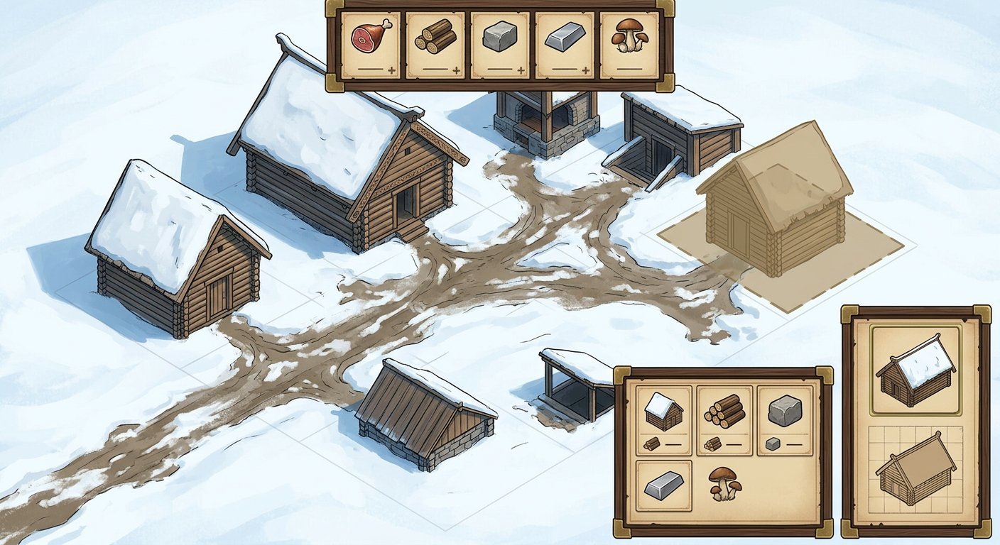
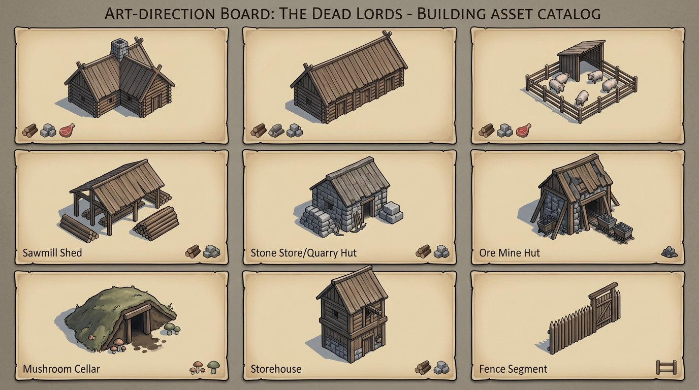
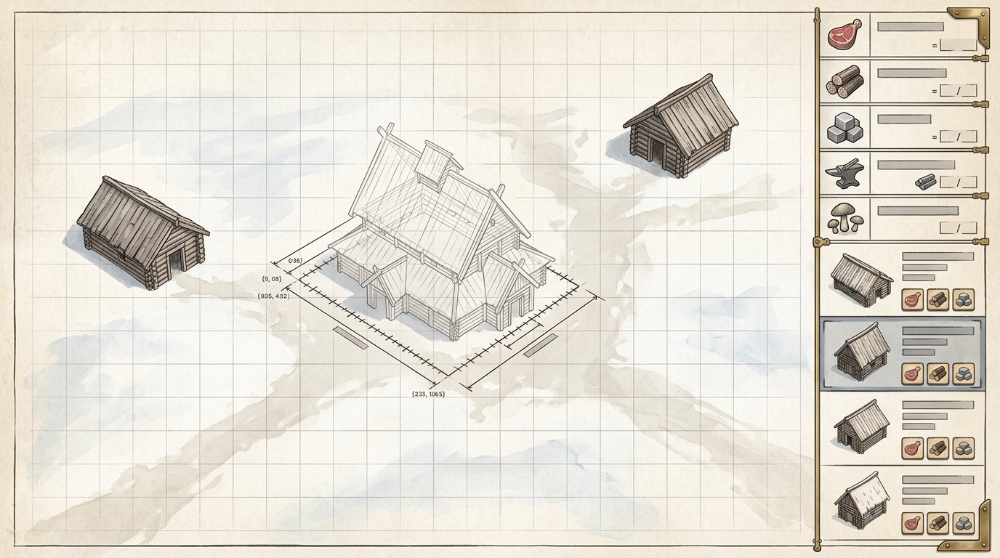
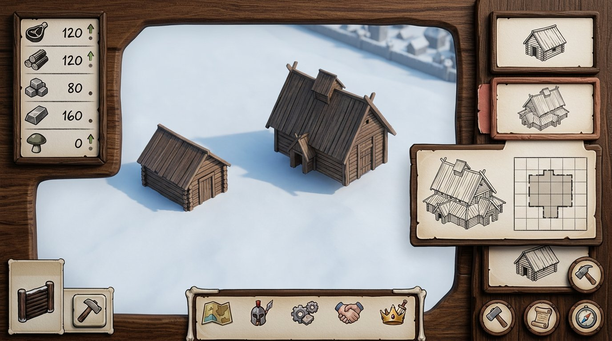
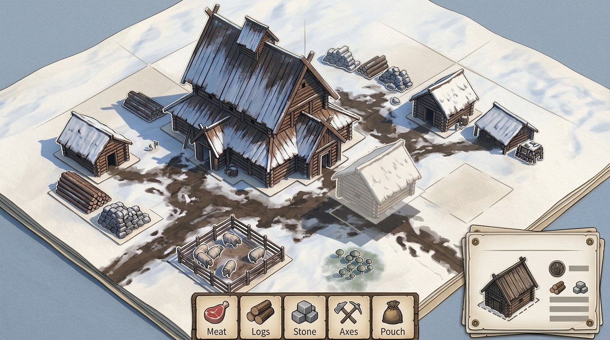
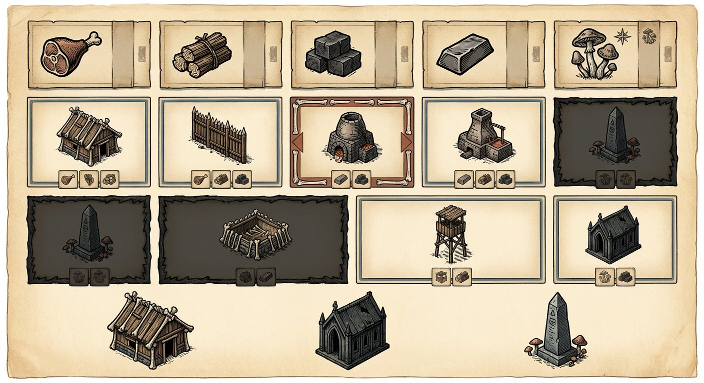
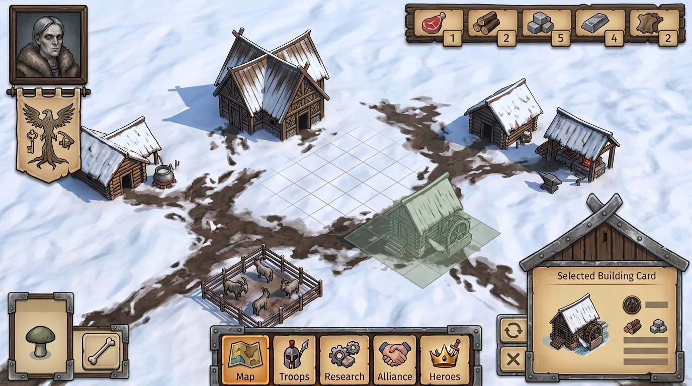
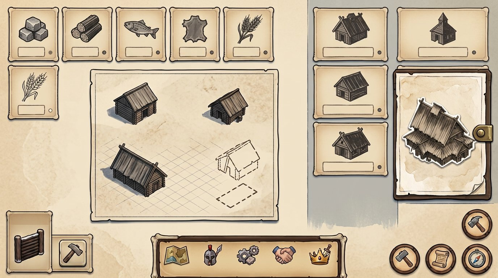
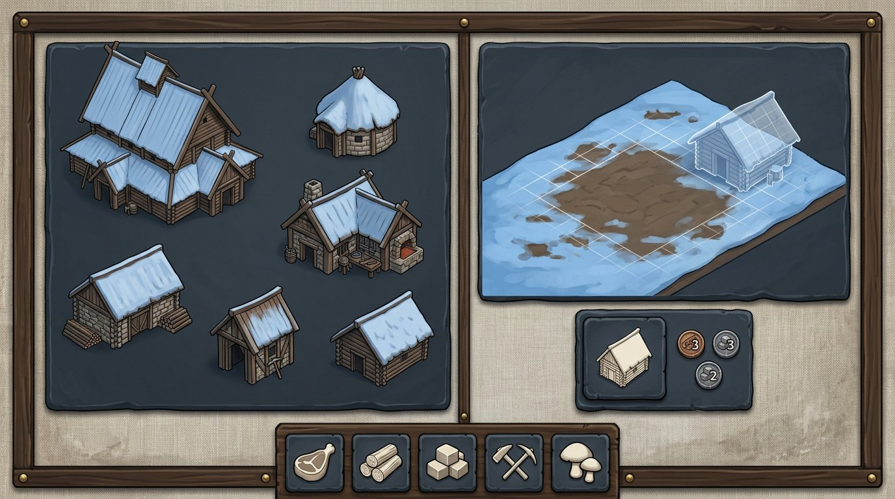
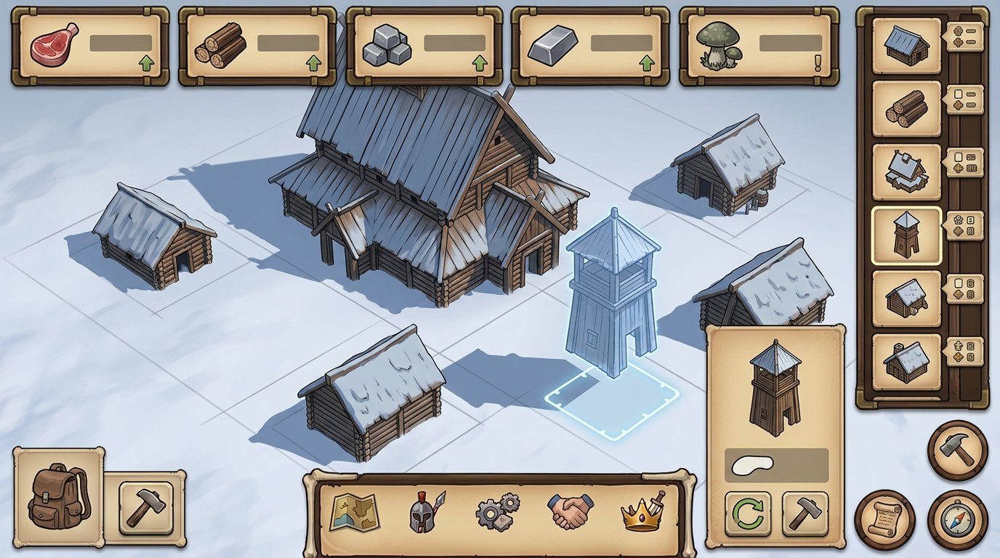

{kind=link}
{kind=link}
Один каркас
Ресурсы, каталог зданий и инспектор используют общую геометрию ячейки и одинаковую толщину линий, а не набор случайных рамок.
The Dead Lords · round 04 · free placement
Новый набор из десяти визуальных направлений опирается только на выбранные вами № 02 и № 09. Задача этого прохода — превратить понравившиеся иконки-ячейки в понятную систему, связанную с каталогом построек и свободной установкой отдельного здания.
Ресурсы, каталог зданий и инспектор используют общую геометрию ячейки и одинаковую толщину линий, а не набор случайных рамок.
Выбрано, доступно или пока недоступно различается формой рамки и простым знаком, не только цветом и не декоративным свечением.
Миниатюра в ячейке — тот же самостоятельный объект, который появляется призраком размещения и затем ставится на свободное место.
Подписи называют замысел каждого промпта. В самих AI-картинках мелкий текст и детали могут быть случайными; это сравнение визуального языка и подачи, не утверждённый клиентский UI.

Ресурсы и здания связаны одним каркасом; выбранная карточка показывает отдельный объект и его footprint.

Проверка масштаба и силуэтов: каждое здание отдельно, с общими камерой и светом, без слитого двора.

Тонкая измерительная графика помогает прочитать footprint, не превращая поле в фиксированный набор слотов.

Более материальный вариант интерфейса: тёмный дуб, светлая вставка и аккуратный знак выбора.

Силуэты и панели будто собраны из печатных слоёв; важно сохранить вокруг построек пустое поле.

Пиктограмма, стоимость и состояние собраны в повторяемые компоненты; доступность читается не одним цветом.

Один объект связывает ячейку каталога с призраком на свободном месте; поле остаётся открытым для планировки.

Линейная гравюра и мягкая заливка дают контраст силуэту, не делая сцену хоррором или фэнтези.

Контрастный материальный ход: каменно-серые карточки, льняная светлая вставка и отдельные объекты.

Самый полный вариант связывает пять ресурсов, каталог, инспектор и размещение одного самостоятельного здания.
{kind=link}
{kind=link}
{kind=link}
{kind=link}
{kind=link}
{kind=link}
{kind=link}
{kind=link}
{kind=link}
{kind=link}